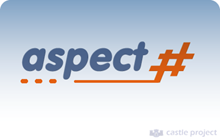

Table of contents
- 1 Why would I use it?
- 2 Why would I
- 3 Content
Aspect#
Aspect# is an AOP (Aspect Oriented Programming) framework for the CLI (.Net and Mono).
It relies on DynamicProxy and offers a built-in language to declare and configure aspects, and is compliant with AopAlliance.
It became part of the Castle Project in June 2005.
Why would I use it?
Aspect# promotes:
- Separation of Concerns(SoC)
- Code reuse
- Decomposition.
Why would I not use it?
AOP is very powerful tool, but it can remove the predictability of your system giving 'life' to it.
Content
The following pages compose the Aspect# portion of this web site.